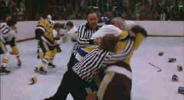

| Slap
Shot/B+,B+ |
| Universal/1977/123m/ANA
1.85 |
Perhaps the most raucous and profane
sports movie ever made, Slap Shot was ahead of its time when it was released in 1977. The
foul language and violent nature of the humor turned off audiences and critics. Viewed today, much
of the film is hilarious, especially the on ice madness. Slap Shot is far from a perfect
game, but the team that put it together plays the game with reckless abandon, never looking for the
safe way toward the goal. Maybe it’s time to get back on the Ice with player coach Reggie Dunlop
and the Charlestown Chiefs.
 |
|
Newman skating and brawling at his best. ©Universal
|
Deep in Blue Collar Pennsylvania a steel
mill is about to close its doors. Their lowly hockey team toiling at the bottom of the Federal
League faces a similar fate since it’s certain that the weak attendance will suffer a fatal body
check with the town’s new unemployment. When player/coach Reggie Dunlop and his teammates
understand the implication an even deeper depression takes hold of the hapless Chiefs. Born of
desperation, the wily veteran Dunlop revives team hopes by planting a news story about the possible
purchase of the team by a Florida entity deep in retirement country. To bait the purchase hook,
Dunlop realizes the team has got to turn its performance around. He succeeds by turning the team
into a group a bad-mouthed battling brawlers on the ice. Slick skating is replaced by below the
belt checking and a trio of new heroes is born between the blue lines. In the meantime, the
team’s general manager is scouting the league for a new job, players are trying hard to hold onto
their wives, and Reggie Dunlop is in for a rude awakening when he discovers the identity of the
team owner.
Paul Newman plays Reggie Dunlop with amazing assurance. Newman does most
of his own skating and his hockey playing as a Cleveland kid serves him well. This is Newman at his
cynical best. Michael Ontkean, a former college hockey layer is a better skating presence that as a
screen force. Struther Martin, wily as ever, makes the most of his screen moments as team general
manager Joe McGrath. Great banter between Newman and Martin highlight the back-story and even hint
at an entertaining history.
Slap Shot looks refreshingly new in this anamorphic DVD
version. Bright colors contrast against the white ice. Focus is beautifully controlled over the
many ice rushing sequences. There is very little grain in the transfer. The Dolby 2-channel mono
creates the allusion of the hockey arena and body checks are delivered with bass impact.
|
|

Selections from the feature archive include articles on Akira Kurosawa,
Frank Darabont, Blonde Bimbos, Hollywood
Street Gangs, or Vietnam:
The Hollywood Pariah, and many more...
Robert
A. Harris

Tilting at Hollywood
He's part of the dynamic duo that restored Lawrence
of Arabia, Spartacus, My Fair Lady and Vertigo. Harris rides a white horse into the for the cause
of preserving our film legacy. Click on the image to read more.


DVDPlanet is the DVD
incarnation of legendary laser retailer Ken Crane's. Deep discounts and serious service.

The National Film Preservation Foundation (NFPF) is the nonprofit organization created by the U.S. Congress to save
America's film heritage.

Information on film sound in theaters and home theaters. Lots of helpful information provided in a
handsome interface.

A vast reservoir of DVD information, reviews, the kitchen sink. Check
out their huge DVD database including reviews from many sites.

The
Movie Poster Archive includes extensive poster images from the films of stars like Susan Hayward,
Kirk Douglas, Katharine Hepburn and many more. Our featured star is James Stewart |